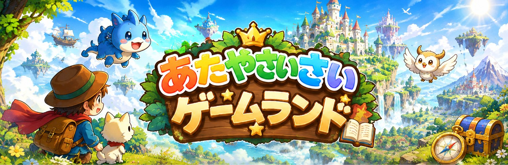
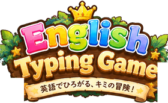
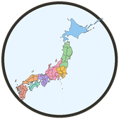
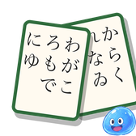
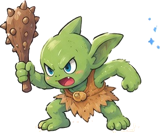
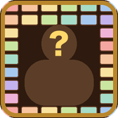
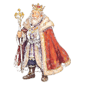

あそんでるだけなのに、まなびになる！すきなかもくをえらんで、すぐあそべるよ

えいご
とどうふけん
百人一首
くく
クラシックde
6人の賢者現在あたやさいさいでは、大人の学びのためのゲームランドも企画中です。ひと足先に、1本を β版 として公開します。
あたやさいさいゲームランドは、ブラウザでそのまま遊べる無料の学習ゲームのあつまりです。こどもたちが「遊んでいるだけなのに学びになる」ことを目ざしています。
ここにあるゲームはぜんぶ無料で、広告も出しません。つくるのにかかるお金は、あそんでくれた人の寄付でまかなっています。よかったら LINEスタンプを買うか、note の記事からチップで応援してください。1こぶんの気もちが、つぎのゲーム1本になります。
あたやさいさいプロジェクトのスタンプ部門「すたやさいさい」がスタンプを販売しています。note の記事では、記事の下の「チップで応援する」から応援できます
© あたやさいさい — ここにあるゲームは、いますぐ無料で遊べます。あそんだ記録は、それぞれの端末のブラウザの中にだけ残ります。こちらから見ることはできません。